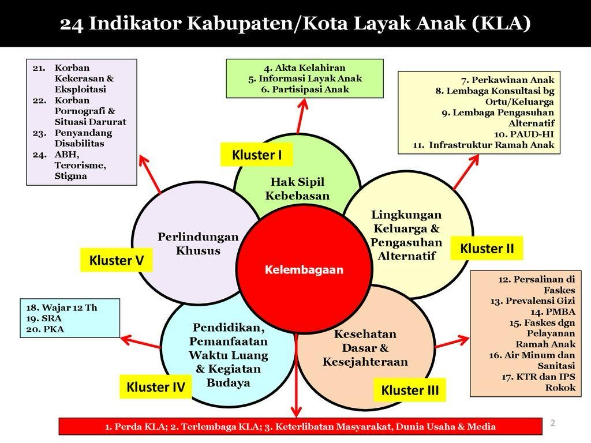

Apa itu Forum Anak?
Forum Anak Nasional adalah organisasi anak yang dibina oleh Pemerintah Republik Indonesia melalui Kementerian Pemberdayaan Perempuan dan Perlindungan Anak.
Mitra Pemerintah
Forum Anak merupakan mitra pemerintah dalam menyelesaikan permasalahan anak. Forum Anak menjadi wadah dalam rangka pemenuhan hak partisipasi anak yang dibentuk secara berjenjang, mulai tingkat nasional, provinsi, kabupaten/kota, kecamatan, dan desa/kelurahan dengan keanggotaan dari berbagai kelompok anak.
Wadah Partisipasi Anak
Forum Anak adalah wadah partisipasi Anak dimana anggotanya merupakan perwakilan dari Kelompok Anak atau Kelompok Kegiatan Anak atau perseorangan, dikelola oleh Anak dan dibina oleh pemerintah, sebagai sarana menyalurkan aspirasi, suara, pendapat, keinginan, dan kebutuhan Anak dalam proses pembangunan.
Presentasi Forum Anak
Presentasi Program Kerja
Indikator Kota Layak Anak
Logo Forum Anak Cilegon